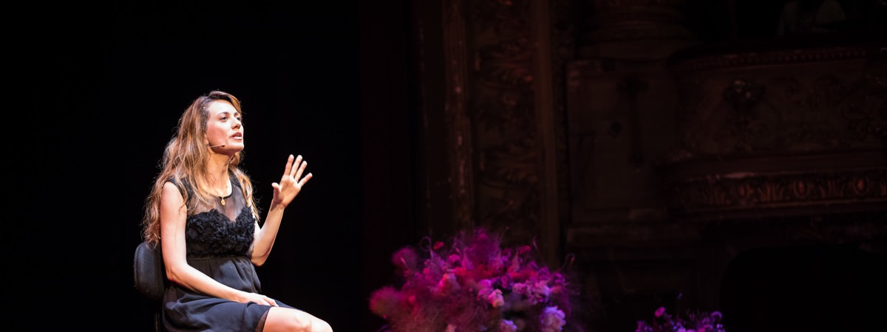

Félicitations, vous venez d'être sélectionné pour être speaker à un événement TED ou TEDx ! Ce guide vous donnera tous les conseils nécessaires pour réussir votre intervention. Vous pouvez tout lire dans l’ordre, mais ce n’est pas obligatoire. Si vous êtes pressé, vous pouvez sauter directement à la partie qui vous intéresse.
Table des matières
Pourquoi le guide ultime du TEDx Speaker ?
Parce que nous nous sommes rendus compte que beaucoup de Speakers se posaient les mêmes questions. Nous avons donc décidé de créer un guide pratique et sans blabla pour les aider à préparer leur TED Talk.

Usages autorisés du guide ultime du TEDx Speaker
Vous pouvez utiliser ce guide librement à condition d’en citer la source et de créer un lien web visible vers cette page dans les cas suivants :
- Dans le cadre d’un événement TEDx : vous pouvez librement le distribuer à vos Speakers, y compris au format imprimé (si vous en voulez une copie au format pdf laissez-moi un message à la fin de l’article).
- Utilisation d’extraits à des fins non commerciales (mémoire d’étudiant, blog personnel, …) : vous pouvez utiliser des extraits.
- Par le milieu de l’éducation.
Si vous êtes organisateur de conférence : vous pouvez nous contacter à info@ideasonstage.com pour que nous réalisions une version personnalisée de ce guide à distribuer à vos intervenants, sans référence à TED ou TEDx et avec votre branding.
Toute utilisation dans un cadre commercial sans accord de notre part est strictement interdite.
Remerciements
L’écriture du guide ultime du TEDx Speaker n’aurait pas été possible sans l’aide de mes collègues, Phil, Marion et Michael, tous Directeurs de Présentation certifiés extraordinaires, et bien meilleur Coachs que moi-même. Nous remercions également tous les organisateurs de conférences qui nous ont fait confiance et qui nous font confiance.
Le chemin vers votre TED Talk
Le moment d’euphorie passé, vous retombez vite sur terre. Que faire ? Par quoi commencer ?
Tout d’abord, assurez-vous d’être bien disponible à la date de l’événement, et d’être certain de vouloir y participer. Rien n’est plus pénible pour un organisateur que d’avoir un speaker qui abandonne en cours de route, surtout lorsque le programme a déjà été annoncé. Assurez-vous d’être certain(e) à 100% de vouloir le faire avant de confirmer votre participation aux organisateurs.

Répondre à l’invitation comme un speaker professionnel
Vous êtes certain de vouloir participer en tant que TEDx Speaker ? Fantastique ! Commencez par envoyer un email aux organisateurs avec 3 informations et 4 questions :
- La confirmation de votre participation.
- La raison de votre participation : mentionnez le sujet dont vous aller parler, et demandez aux organisateurs de confirmer que le sujet leur convient.
- Votre « mini-bio » (biographie) : Qui êtes-vous ? Quel est votre parcours de vie ? Qu’est-ce qui vous rend original ? Pourquoi allez-vous parler à TEDx ? Pas besoin d’en faire des pages, dix lignes c’est déjà beaucoup. Soignez particulièrement votre titre (CEO de machin, Inventeur fou, Futurologue, …) car c’est ce qui sera le plus apparent sur le site web et sur le programme.
- Demandez quelle est la durée prévue pour votre intervention : une des règles clés d’une présentation TED est de respecter le temps qui vous est imparti, et ce temps est généralement fixé par les organisateurs. Des durées populaires sont 5, 6, 10, 12, 15 et 18 minutes.
- Demandez le format de la présentation : PowerPoint, Keynote, Prezi ? Format 4:3 ou format 16:9 ? Fond clair ou fond sombre ? Y a-t-il un modèle à respecter ?
- Demandez les dates de coaching prévues. Si les organisateurs portent bien leur nom (ils sont organisés), ils auront parmi leurs équipes ou partenaires un ou plusieurs Directeurs de Présentation ou Coachs qui vous aideront à vous préparer. Fixez avec eux les dates de répétition le plus tôt possible. Il est très, très fortement conseiller d’accepter leur aide, car ils vous aideront à rendre votre TEDx Talk encore plus mémorable. Ce que vous y apprendrez vous sera utile pour le reste de votre carrière professionnelle.
- Demandez le Speaker Release Form : c’est le « contrat » par lequel vous vous engagez à respecter les règles de TEDx. Si les organisateurs ne vous l’envoient pas, réclamez-le, il est obligatoire. Si vous envoyez tous ces éléments dès le début, les organisateurs ne pourront qu’être impressionnés par votre professionnalisme !
Organiser votre préparation
Une fois votre réponse initiale envoyée, les organisateurs devraient rapidement vous contacter pour fixer les éléments suivants avec vous :
- Votre voyage et votre hébergement si nécessaire.
- Les dates et le lieu pour les séances de préparation de votre intervention avec le coach. Les répétitions pour les conférences locales ont souvent lieu dans à un endroit préces. Mais pour les conférences à portée nationale ou internationale, c’est souvent impossible. Les séances de préparation auront alors lieu par échange d’email et conférence à distance (téléphone, Skype, …)
- L’heure à laquelle vous devrez être sur place le jour J, et si vous aurez la possibilité de faire une dernière répétition le jour J (fortement recommandé).
Avant la première répétition.
Vous avez fixé la date de votre première séance de travail avec le coach, ou au moins vous avez une idée du moment où elle aura lieu. Avant cette première répétition, vous avez plusieurs choses à faire.
Si vous ne connaissez pas TED ou TEDx, la première chose à faire est de visiter TED.com et de visionner quelques vidéos pour comprendre pourquoi cet événement est si réputé. Voici quelques liens, en français et en anglais, vers des « TED Talks », qui vous donneront un bon aperçu du style et de la qualité des interventions.
Karim Noui : pourquoi nous ne savons rien de l'univers... et tant mieux !
Jean-Gabriel Causse : le pouvoir des couleurs
Sarah Kaminsky : mon père ce faussaire
Al Gore : new thinking on the climate crisis
Elizabeth Gilbert : your elusive creative genius
Seth Godin : how to get your ideas to spread
Hans Rosling : Asia’s rise how and when
Fournissez le titre de votre Talk : les organisateurs ont besoin de préparer le site web et d’imprimer les programmes. Pour cela, ils auront besoin du titre de votre Talk. N’utilisez pas un titre générique, utilisez un titre accrocheur, qui pose une question, ou un slogan. Bien souvent, c’est un point qui pose problème car à ce stade vous ne connaissez probablement pas encore votre titre.
Envoyez le texte / les slides de votre talk. Faites-les parvenir au coach avant votre première répétition. Cela lui permettra de vous donner conseils et de mieux préparer la séance de travail avec vous. De fait, il est possible que votre coach ait convenu d’un premier entretien pour vous aider à structurer votre texte et vos slides. Si vous ne savez pas comment faire, le chapitre suivant est pour vous.
Créer votre présentation
Une bonne présentation s’appuie sur trois éléments au service du message de la présentation :
- Une histoire bien structurée et captivante.
- Des visuels forts.
- Un orateur clair et passionné. Avant de vous lancer dans la préparation détaillée de votre Talk, n’oubliez pas de prendre en compte les attentes des organisateurs et du public et du contexte :
- Quel est le contexte de l’actualité ? Y a-t-il des événements récents qui peuvent influencer sur la perception de ma présentation ?
- Vérifiez la raison pour laquelle les organisateurs vous ont invités. Quelles sont leurs attentes par rapport à ce dont vous allez parler ?
- Demandez-vous le changement que vous voulez voir dans votre public. Posez-vous la question « après ma présentation, je veux que mon public… » participe au crowdfunding, parle de mon initiative, comprenne mieux la physique quantique, comprenne l’importance de l’exploration spatiale, ait passé un bon moment, se sente heureux, …
L’art de présenter a été le sujet de nombreux livres, et il est impossible de tout expliquer dans ce document, ou celui-ci ferait 500 pages et plus personne ne le lirait. J’ai donc du faire un choix : vous trouverez pour chacun des points mentionnés ci-dessus quelques conseils non exhaustifs pour faire une bonne présentation « TED Style ».
Construire votre histoire
N’oubliez pas de prévoir votre histoire en fonction du temps qui vous a été alloué. Si vous écrivez votre texte, voici un truc simple pour estimer à la louche le temps qu’il durera : comptez le nombre de mots et divisez-le par 150. C’est le temps minimum que cela prendra pour le raconter sur scène. Si vous allez plus vite, c’est que vous parlez trop vite.
Ci-dessous vous trouverez neuf caractéristiques pour raconter une bonne histoire.
Physique. Les TEDx Speakers les plus mémorables font une action surprenante sur scène. Bill Gates a amené des moustiques sur scène, Jamie Oliver une brouette remplie de sucre, Phil Waknell a lâché des ballons de baudruche, Isaac Getz a lancé des peluches de singe dans la salle. Peter Drucker utilise un gros réveil qu’il fait sonner sur scène. Hans Rösling utilise une perche en bambou. Ces actions physiques marquent les esprits car elles sont souvent originales et inattendues. Demandez-vous « Quelle action ou quel objet pourrais-je utiliser sur scène pour renforcer mon discours ? »
Relié. Nous ne pouvons apprendre qu’en construisant sur ce que nous connaissons déjà. Le public ne peut comprendre quelque chose qu’il ne connaît pas du tout. Le public de TEDx est branché, mais généraliste. Si vous êtes spécialiste de la neurochirurgie ou de la physique quantique, vos sujets intéresseront le public, mais il ne connaîtra pas grand chose. Utilisez des analogies, des métaphores, des images pour relier vos connaissances aux leurs.
Émotionnel. Ne dissimulez pas vos émotions, partagez-les avec votre auditoire. Partagez les moments forts que vous avez vécu. Surprenant. La surprise est un élément clé d’une bonne présentation TED ou TEDx.
Surprenant. Apportez des éléments inattendus, un nouveau point de vue, une façon inédite de présenter votre sujet.
Concret. Très concret. Évitez les idées et les termes conceptuels.
Imagé. Et imaginé. On raconte une bonne histoire lorsque les gens peuvent se l’imaginer mentalement, lorsque celle-ci évoque des images fortes.
Exact. Vérifiez vos faits, vos informations et vos données trois fois.
Nouveau. Même si les ingrédients précédents peuvent vous faire réaliser un bon TED Talk, demandez-vous comment votre Talk peut apporter quelque chose de nouveau, un point de vue auquel personne n’a pensé avant.
Twitter-ready. Le public des événements TEDx est en général très actif sur les réseaux sociaux, Facebook, Twitter, et autres. Vous aurez beaucoup plus de chances qu’on parle de vous si vous donnez des phrases « Twitter ready ». Ces petites phrases ponctueront les moments forts de votre discours.
En résumé ces neuf règles donnent :
- Physique
- Relié
- Emotionnel
- Surprenant
- Concret
- Imagé
- Exact
- Nouveau
- Twitter-ready
Autrement dit, PRESCIENT ;)
En tant que TEDx Speaker, vos premiers mots peuvent influencer tout le reste de votre Talk. Ils peuvent vous attirer la sympathie du public ou au contraire lui ôter toute envie de vous écouter. L’introduction sert aussi à accrocher l’attention du public. Vous pouvez le faire avec un élément surprenant, une anecdote, une question rhétorique …
N’hésitez pas également à dire là où vous voulez aller dès le début. Il est beaucoup plus facile de suivre une présentation orale si on sait dès le début ce que le Speaker veut démontrer. Par exemple :
- « Aujourd’hui je vais montrer comment Twitter est devenu un outil qui peut faire vaciller des dictatures… »
- « Je vais montrer si la Chine et l’Inde vont dépasser le salaire moyen en Occident. Et si oui, quand… »
Ensuite utilisez une structure cohérente et simple pour développer votre histoire. Par exemple une structure temporelle, ou vous racontez les événements en suivant une ligne du temps. Vous pouvez également suivre une structure question-réponse, ou raconter un périple.
Si vous présentez des chiffres, donnez leur du sens et rendez-les concrets. Par exemple :
- L’empreinte écologique d’un Européen est de x m2 est ordinaire. L’empreinte écologique d’un européen est de deux terrains de football est extraordinaire.
- Apple a vendu x millions d’iPhone en un jour est impressionnant. Apple réalisé en un jour l’équivalent du CA d’un an de TF1 est extraordinaire !
- 1 milliard d’humains ont faim est impossible à visualiser. Un humain sur 7 a faim est facile à visualiser.
Évitez de « vendre » votre produit, votre service ou votre société, c’est interdit à TEDx. Si vous avez été invité à présenter votre dernière invention, mettez l’accent sur l’histoire de la conception du produit, sur les usages surprenant qui en ont été fait… bref racontez son histoire mais n’ayez pas l’air du vendeur de voitures du coin.
Pensez également à éliminer les termes techniques, les acronymes et le jargon spécialisé.
Évitez également le syndrome « Armaggeddon » : il n’y a que des catastrophes, tout est fichu, tout le monde est méchant. Cela ne résout rien.
La conclusion sert à rappeler le ou les messages clés, mais également à l’appel à l’action. Que voulez-vous que le public fasse après votre présentation ? C’est le moment de le rappeler.
Concevoir des slides style « TED »
Il y a une chose que le public de TEDx adore démolir : ce sont les slides pourris. Si vous voyez le public rigoler et prendre vos slides en photo, ce n’est pas bon signe… Mais qu’est-ce qu’un slide pourri pour le public TEDx ? Voici quelques exemples :
- Les slides couverts de texte. Ce genre de slide vous attirera les rires aussi sûrement que le miel attire les mouches.
- Les slides avec des images ringardes. Oubliez les clip-arts intégrés de Microsoft. Ils ne sont plus à la mode depuis la fin des années 90. Des années 1890 je veux dire.
- Les slides avec des images bateau ou de mauvaise qualité.
- Les slides avec la police Comic Sans : n’y pensez même pas.
Créer de bons visuels pour un TED Talk n’est pas si difficile, et votre Coach vous y aidera. Voici quelques règles pour mieux vous préparer :
- Respectez la règle d’or : n’utilisez que des slides qui clarifient ou renforcent votre message.
- Préférez un fond noir ou sombre plutôt qu’un fond blanc ; les spectateurs sont en général dans la pénombre et un fond clair sera plus agressif visuellement.
- Utilisez très peu de texte. Une ligne de texte maximum par slide. Il peut y avoir des slides avec plusieurs lignes, mais il faut vraiment que cela reste exceptionnel.
- Utilisez de préférence une police de caractères « sans empattements » telle que Arial, Helvetica, Helvetica Neue, Futura, Avenir, … Ces polices sont en général plus lisibles que les polices avec empattement comme Times, Palatino, …
- N’utilisez des slides que lorsque c’est nécessaire. Il est tout à fait possible de n’avoir des slides que pour une partie de son intervention.
- Utilisez des (très) belles images, qui apportent de l’émotion à votre discours. Assurez-vous d’avoir les droits d’utilisation de l’image, ou votre présentation risque de ne jamais être diffusée !
- Utilisez des graphiques simples, très simples.
- S’il y a des vidéos, assurez vous qu’elles fonctionnent.
Répéter
La ou les répétitions sont cruciales. Certaines personnes disent qu’elles n’aiment pas répéter, mais c’est parce qu’elles ne répètent pas bien ou pas assez. Sans répéter, votre présentation sera peut-être bonne, mais jamais excellente. Si vous répétez une fois ou deux, vous aurez répété, mais pas assez pour avoir assimilé votre présentation et être à l’aise ; c’est dans cette situation que vous aurez l’impression d’être moins bon après avoir répété. Mais au fil des répétitions vous allez vous améliorer, jusqu’à dépasser largement le niveau que vous aviez au début ! C’est ce niveau que votre coach va vous aider à atteindre.

Voici quelques conseils pour vous aider à mieux répéter :
- Ne vous présentez pas trop longuement. Le Maître de Cérémonie vous aura déjà présenté lorsque vous montez sur scène. Ne présentez que les éléments essentiels à la compréhension de ce que vous allez raconter.
- Familiarisez-vous avec la télécommande pour faire dérouler les slides. Vous ne voulez pas être le Speaker qui fait dérouler ses slides à l’envers. Et n’oubliez pas de cliquer pour faire dérouler les slides au fur et à mesure de votre présentation.
- Forcez-vous à garder un contact visuel permanent avec un « public » imaginaire.
- Faites attention à ne pas parler trop vite. N’hésitez pas à ralentir votre débit ou à faire des pauses pour renforcer l’effet dramatique.
- Enregistrez-vous. Je sais, vous n’en avez pas envie, mais c’est la meilleure façon de s’améliorer ! Nous ne le répéterons jamais assez : les meilleurs TEDx Speakers ont tous répété !
Le jour T…
Vous venez de terminer les répétitions. Vous êtes fin prêt pour être TEDx Speaker et être la star sur scène. Vous n’avez donc plus rien à faire… et bien pas tout à fait. Il vous reste encore quelques étapes avant le grand moment.

Choix de vos vêtements
Pour parler à TED(x), nous vous conseillons de vous habiller de la même manière que lorsque vous travaillez. Bien entendu, il y a des exceptions selon les métiers ! Mais l’idée est de vous habiller avec un style qui correspond à la position qui est la vôtre. Si vous êtes designer, vous ne vous habillerez pas en costume, et si vous êtes PDG ou homme politique, vous ne viendrez probablement pas en Jeans et T-Shirt.
Voici d’autres conseils pour votre choix vestimentaire (à adapter en fonction du contexte) :
- Ne soyez pas trop bien habillé : ne vous habillez pas comme si c’était la remise des Oscars à Hollywood, vous risquez de vous sentir un peu ridicule par rapport aux autres speakers. De plus, être trop bien habillé peut renvoyer une certaine image d’arrogance.
- À l’opposé, soyez soigné. Vous pouvez être en jeans et en t-shirt, à condition que cela reste net et corresponde à votre image.
- Évitez les vêtements avec des petits carreaux ou des petites rayures ; ça ne passe pas très bien à la caméra.
- Pensez à porter une ceinture, ou à avoir un endroit où accrocher le transmetteur HF du micro. C’est un petit boîtier de la taille d’un paquet de cigarettes. Les hommes ont rarement ce problème (en général ils portent un pantalon…) mais les robes peuvent vous compliquer la vie. Vous ne voulez pas être le Speaker qui a dû accrocher le transmetteur à son slip.
- Pensez également à avoir un endroit pour accrocher la pince du micro cravate si ce type de micro est utilisé. En général on l’attache au col de la chemise ou au col du pull.
- Évitez les vêtements trop compliqués ou trop serrés.
L’ultime répétition sur scène
Si cela n’a pas été le cas pendant les répétitions précédentes, vous aurez peut-être l’occasion de faire une dernière répétition le jour même. Ne vous en privez pas, il y a des éléments qui ne peuvent être pris en compte pendant les autres répétitions :
- Essayez le micro, et réglez le volume si nécessaire. Soyez particulièrement attentif à sa position et à sa distance par rapport à votre bouche, ce sont les deux facteurs qui vont le plus influencer le son. Trop en face et trop près de la bouche, cela fera ressortir les sons « P » et « S ». Trop loin, le son sera inconstant.
- Prenez vos repères, mémorisez la position de l’écran derrière vous (où devez-vous vous placer pour ne pas être entre l’auditoire et l’écran ?), l’écran de retour en face de vous, la position de la minuterie, l’endroit le mieux éclairé de la scène (important pour les événements où vous serez filmés).
- Répétez en imaginant que le public est là. N’oubliez pas de regarder toute la salle. Si la salle est sombre et la scène équipée de spots très lumineux ou d’un projecteur « poursuite », vous ne verrez pas le public. Ce n’est pas grave, imaginez-le et regardez dans sa direction.
Avant de monter sur scène
Vous avez terminé l’ultime répétition. Vient maintenant le moment le plus angoissant : l’attente (saviez-vous que les êtres humains préfèrent faire quelque chose d’inutile plutôt que de ne rien faire ?) Voici quelques conseils pour vous aider à gérer au mieux ce moment difficile :
- Évitez le café, le thé, les jus de fruits et les boissons trop froides. Ces boissons vont vous rendre plus nerveux, vous assécher la bouche, altérer vos cordes vocales et vous donner l’envie d’aller aux toilettes.
- Repérer la loge dans laquelle on vous maquillera (oui, tout le monde passe par cette étape, si vous n’êtes pas habitué, cela peut surprendre). Demandez l’heure exacte à laquelle vous devrez vous y présenter, plus le nom de la personne qui vous y accompagnera.
- Repérez le chemin exact qui mène de la loge à la scène ; ce chemin est parfois long et on a vu des Speakers se perdre !
- Respirez calmement et en profondeur pour vous détendre.
- Repérez vos amis dans la salle. Ils vous aideront à affronter le stress.
- Ne restez pas isolé, continuez à parler avec les autres Speakers.

Ça y est, vous êtes TEDx Speaker !
L’attente est terminée. Vous vous dirigez vers la loge pour le maquillage si ce n’est pas encore fait. Ça y est, le Speaker précédent a fini. Le Maître de Cérémonie monte sur scène, remercie l’orateur précédent, et vous annonce. C’est votre moment ! Vous êtes TEDx Speaker !
Et après ?
Être TEDx Speaker, cela ouvre souvent de nouveaux horizons. Certaines personnes disent que cela a changé leur vie. Partagez, discutez avec le public. Et profitez.
En conclusion
À Ideas on Stage, nous croyons vraiment qu’une bonne présentation peut changer le monde. J’espère que ce guide vous aura été utile, qu’il vous aura aidé à faire de votre TED Talk un moment inoubliable de votre vie.

À propos de l’auteur
Ce guide a été écrit par Pierre Morsa. Il se base sur plusieurs années d’expérience à coacher les intervenants d’un grand nombre d’événements TEDx. Il s’adresse aux TEDx Speakers, et aux Conférenciers en général, et a pour but de vous aider à vous préparer comme un pro. Si vous avez des commentaires, des conseils à ajouter ou des questions, envoyez-les moi à pierre.morsa@ideasonstage.com
Révisions
- 19 Sep. 2014 : ajout d’un conseil sur le format des présentations.
- 18 Sep. 2014 : première version française.